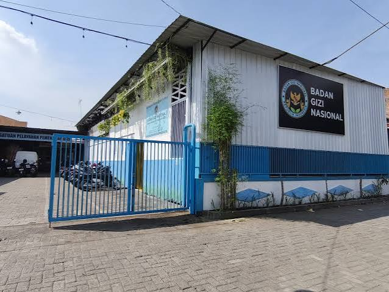
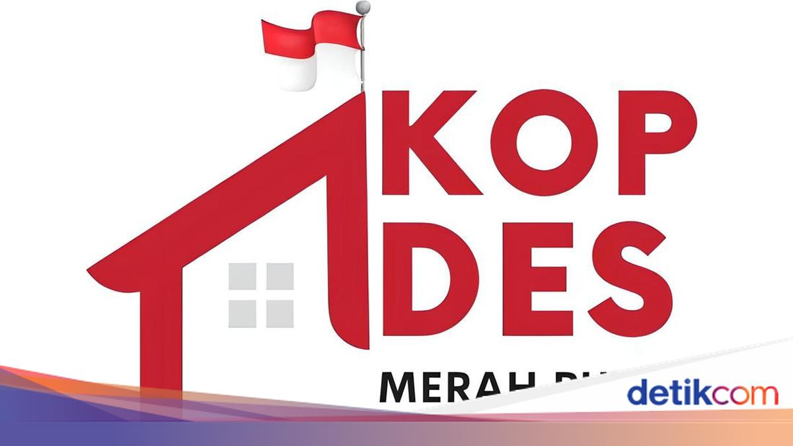
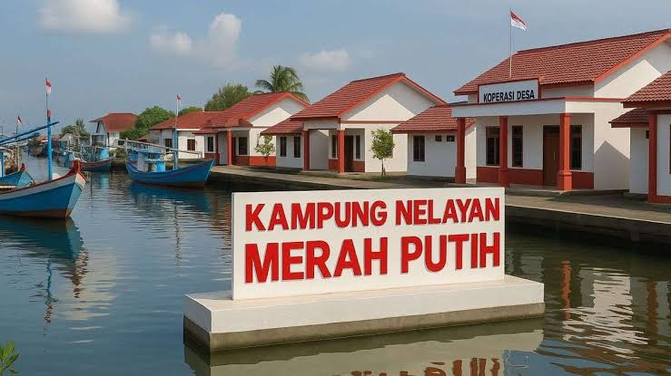

Profil & Visi
Sebagai Presiden Republik Indonesia ke-8, Prabowo Subianto memiliki visi besar untuk memajukan bangsa melalui konsep "Bersama Indonesia Maju, Menuju Indonesia Emas 2045". Dedikasinya yang panjang di bidang militer dan pertahanan negara membentuk karakter kepemimpinan yang tegas, patriotik, dan berfokus pada ketahanan nasional.
Riwayat Jabatan
Presiden Republik Indonesia ke-8
2024 - SekarangMemimpin negara dan pemerintahan dengan fokus pada pembangunan infrastruktur hilirisasi, ketahanan pangan, dan swasembada energi.
Menteri Pertahanan Republik Indonesia
2019 - 2024Bertanggung jawab merumuskan kebijakan pertahanan dan memodernisasi alutsista TNI.
Ketua Umum Partai Gerindra
2008 - SekarangMendirikan dan memimpin Partai Gerindra hingga menjadi salah satu partai politik terbesar di Indonesia.
Riwayat Pendidikan
Akademi Militer Nasional (AKABRI)
1970 - 1974Lulus dari Akademi Militer Angkatan Darat (Magelang, Jawa Tengah).
Pendidikan Militer Lanjutan
1980 & 1985Special Forces Officer Course di USA dan GSG-9 Anti-Terrorist Course di Jerman.
Proyek

Program Makan Bergizi Gratis
6 Januari 2025 - Sekarang

Koperasi Desa
21 Juli 2025 - Skarang

Desa Nelayanan
Juni 2026 - Sekarang